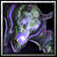

Soul Stalker
[Bow]
+2,050 Agility
+3,000 Health
+9% Skill Damage
Passive: +(4x Agi) Damage. (35,000 Cap)
Passive: "Soul Rip" 1/13 chance to activate on attack dealing (50x Agi [67.5x Agi for Snipers]) magic damage
Sniper Specialty Cursed Arrows: Improves Snipe (T) damage by 15% and applies a debuff called Suppression to enemies hit by Snipe (T) (reduces damage by 100%, silences, and greatly reduces movement speed for 3 seconds).